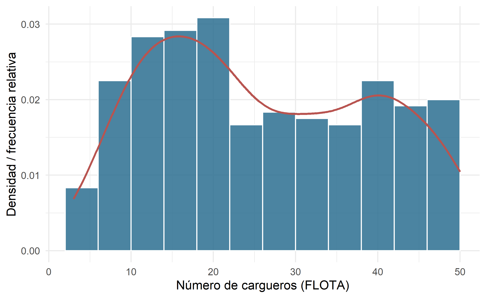
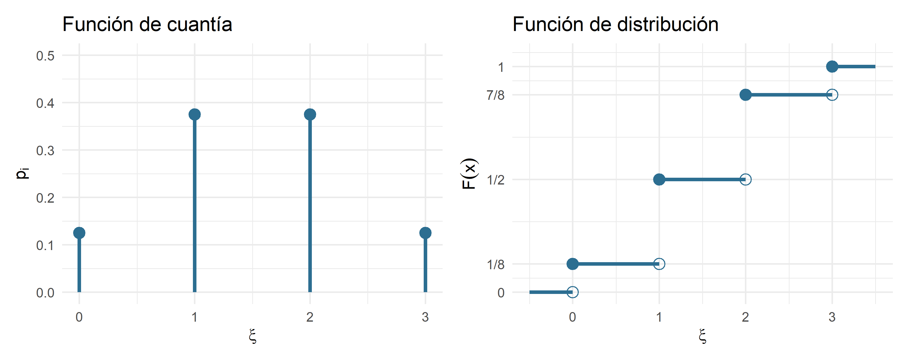
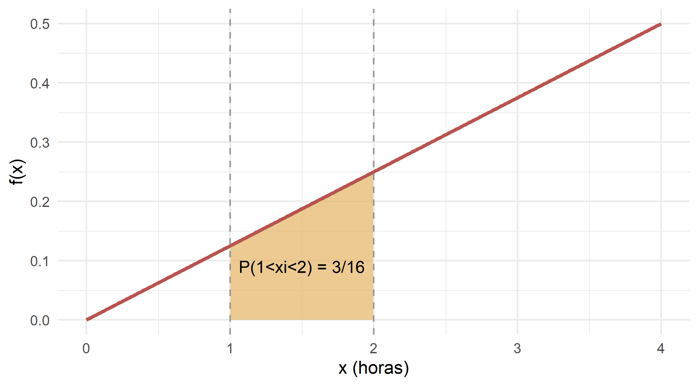

8 Variables aleatorias
Figura 8.1. Del azar bruto al azar domesticado: la variable aleatoria.
— Atribuido (con dudosa exactitud) al profesor Kepler-Bernoulli, cátedra de Estadística Empresarial de la Universidad Libre de Coruscant.
8.1 De la probabilidad a la variable aleatoria
En el capítulo anterior aprendimos a medir la incertidumbre. Dábamos con un experimento aleatorio, describíamos su espacio muestral \(E\), agrupábamos resultados en sucesos y asignábamos a cada suceso un número entre 0 y 1: su probabilidad. Un ejemplo doméstico: la empresa arrakis freight despacha esta noche un carguero por la ruta Arrakis–Klendathu. El experimento tiene dos resultados posibles: llega a tiempo o llega tarde. Con eso ya sabemos hablar en probabilidades.
Ahora bien, en cuanto la empresa despacha no uno, sino veintitrés cargueros, describir cada suceso con palabras se vuelve incómodo. ¿De verdad vamos a enumerar {tarde, tarde, a tiempo, tarde, a tiempo, ...} para las \(2^{23}\) combinaciones posibles? Sería tedioso incluso para un droide protocolario. Lo natural es asignar un número a cada resultado —por ejemplo, “número de cargueros que llegan a tiempo”— y trabajar con ese número.
Ese salto —del suceso al número— es exactamente lo que hace una variable aleatoria. Y con él ganamos dos cosas enormes:
- Podemos usar toda la maquinaria del cálculo (sumas, integrales, medias, varianzas) sobre los resultados de un experimento aleatorio.
- Podemos comparar experimentos completamente distintos —el tonelaje de un buque astillero KORRIGAN y el IDIG de una empresa de la Vía Láctea— con el mismo lenguaje matemático.
La idea intuitiva. Una variable aleatoria es, en el fondo, un traductor: coge cada resultado posible del experimento y lo convierte en un número. Después, cada número hereda la probabilidad del resultado del que proviene. La probabilidad, así, deja de vivir sobre “sucesos con nombre” y pasa a vivir sobre “números”.
8.2 Definición formal de variable aleatoria
Dado un espacio de probabilidad \((E, \Omega, P)\), se define una variable aleatoria \(\xi\) como una aplicación
\[ \xi : E \longrightarrow \mathbb{R} \]
que a cada resultado elemental \(e \in E\) le hace corresponder un número real \(\xi(e)\). Los sucesos —conjuntos de resultados— se transforman en conjuntos de números reales, y las probabilidades de los sucesos se convierten en probabilidades asociadas a esos números.
Una variable aleatoria queda perfectamente descrita cuando conocemos dos cosas:
- Su campo de variación: qué valores puede tomar.
- Su distribución de probabilidad: con qué probabilidad los toma.
8.2.1 Ejemplo I: los tres despachos nocturnos de arrakis freight
arrakis freight despacha cada noche tres cargueros por la ruta Arrakis–Giedi Prime. Cada despacho puede terminar en éxito (E) —el carguero atraviesa la tormenta de arena estelar y entrega la especia— o fracaso (F). Definimos:
\[ \xi = \text{"número de cargueros que llegan con éxito esta noche"}. \]
El espacio muestral tiene ocho resultados. Bajo el supuesto (idealizado) de que cada despacho es independiente y tiene probabilidad de éxito \(0{,}5\), la variable aleatoria \(\xi\) mapea los sucesos a números así:
| Suceso | \(\xi\) | \(P(\xi = x_i)\) |
|---|---|---|
| {F,F,F} | 0 | 1/8 |
| {E,F,F}, {F,E,F}, {F,F,E} | 1 | 3/8 |
| {E,E,F}, {E,F,E}, {F,E,E} | 2 | 3/8 |
| {E,E,E} | 3 | 1/8 |
Tabla 8.1. Variable aleatoria \(\\xi\): número de cargueros que llegan a Giedi Prime.
El campo de variación de \(\xi\) es \(\{0, 1, 2, 3\}\). La distribución de probabilidad es la lista de probabilidades asignadas a cada uno de esos valores. Con ese par de piezas ya podemos calcular cualquier cosa: la probabilidad de que lleguen al menos dos, la probabilidad de que no llegue ninguno (mala noche para las bonificaciones del gerente), etc.
8.2.2 Ejemplo II: la variable “tonelaje”
Fijémonos ahora en la base de datos astilleros_48. La variable TONELAJE recoge las toneladas métricas de cada nueva unidad salida del astillero KORRIGAN, SELENE o ARCTURUS. Si mañana el astillero KORRIGAN bota una nueva nave y llamamos
\[ \xi = \text{"tonelaje de la próxima nave botada por KORRIGAN"}, \]
entonces \(\xi\) puede tomar cualquier valor dentro de un rango razonable (digamos entre 600 y 1.000 toneladas). Ya no hay ocho resultados: hay infinitos. Este segundo ejemplo tiene una naturaleza radicalmente distinta al primero, y por eso —muy pronto— tendremos que distinguir entre variables aleatorias discretas y continuas.
8.3 Variable aleatoria vs. variable estadística
En los capítulos 1, 2 y 3 hablábamos también de “variables”. Analizábamos, por ejemplo, el SALARIO de los 49 trabajadores del holding, o el TONELAJE de las 48 unidades del fichero de astilleros. ¿En qué se parece —y en qué se diferencia— aquella variable estadística de la nueva variable aleatoria?
8.3.1 Lo que tienen en común
Ambas asocian un número a cada individuo o resultado. Ambas pueden ser discretas o continuas. Ambas admiten representaciones gráficas parecidas —histogramas, diagramas de barras—, y de ambas nos interesa la media, la dispersión, la asimetría… Un histograma es a la variable estadística lo que una función de densidad es a la variable aleatoria: la misma familia visual.
8.3.2 En qué se diferencian
La variable estadística vive en el mundo observado: ya se recogieron los 300 datos de la base interestelar_300 y podemos contar cuántas empresas tienen entre 20 y 30 cargueros. La variable aleatoria vive en el mundo posible: describe qué podría ocurrir en un experimento antes de realizarlo.
Dicho de otra forma:
- Variable estadística: fotografía de una muestra concreta. Las frecuencias son datos observados.
- Variable aleatoria: modelo teórico de un experimento. Las probabilidades son valores asignados a priori.
8.3.3 El puente frecuentista
¿Y por qué se parecen tanto? Porque el enfoque frecuentista de la probabilidad nos dice que, si repitiéramos el experimento muchas veces, las frecuencias relativas de cada resultado se estabilizarían en torno a un número: precisamente su probabilidad. Es decir, si observamos suficientes datos, la variable estadística tiende a comportarse como si fuera la realización empírica de una variable aleatoria subyacente.
Ilustrémoslo. Tomemos la variable FLOTA de las 300 empresas de la base interestelar_300. Ese histograma es una fotografía descriptiva. Pero si pensamos que esas 300 empresas son una muestra de una “población interestelar” enorme, y que la flota de una empresa cualquiera es una variable aleatoria \(\xi\), entonces el histograma es una aproximación empírica a la distribución de probabilidad de \(\xi\).

Figura 8.2. Distribución empírica del número de cargueros por empresa en interestelar_300. Bajo el enfoque frecuentista, este histograma es una aproximación a la distribución de probabilidad de la variable aleatoria ‘flota de una empresa cualquiera’.
La barra que muestra “hay tantas empresas con flotas entre 20 y 24 cargueros” es un dato descriptivo. Pero si dividimos su altura por el total y por la anchura del intervalo, empieza a parecerse mucho a un valor de probabilidad. Ese es el puente: la estadística descriptiva y la teoría de la probabilidad se dan la mano en el límite, cuando la muestra crece.
Regla mnemotécnica. La variable estadística cuenta; la variable aleatoria predice. La primera trabaja con lo que ya ocurrió; la segunda, con lo que puede ocurrir. Y en el límite —cuando repetimos el experimento hasta el aburrimiento cósmico— las dos convergen.
8.4 Función de distribución
Hasta aquí hemos hablado de “distribución de probabilidad” de forma un tanto informal. Toca darle nombre y apellidos. La forma canónica —y universal, sirve tanto para discretas como para continuas— de expresar la distribución de una variable aleatoria es la función de distribución.
Se define como
\[ F(x) = P(\xi \le x), \qquad \forall x \in \mathbb{R}. \]
En cristiano: \(F(x)\) es la probabilidad de que la variable aleatoria tome un valor menor o igual que \(x\). Es una función acumulativa: va sumando probabilidad de izquierda a derecha.
8.4.1 Propiedades
La función de distribución cumple, para cualquier variable aleatoria:
- \(0 \le F(x) \le 1\) para todo \(x\).
- \(\lim_{x \to -\infty} F(x) = 0\) y \(\lim_{x \to +\infty} F(x) = 1\).
- Es no decreciente: si \(x_1 < x_2\), entonces \(F(x_1) \le F(x_2)\).
- Es continua por la derecha.
Las dos primeras propiedades son casi de sentido común (probabilidad total = 1, mínima = 0). La tercera dice que, al mover \(x\) hacia la derecha, sólo podemos acumular más probabilidad, nunca menos. La cuarta es una tecnicalidad importante en las variables discretas, donde \(F\) da saltos.
8.5 Variables aleatorias discretas
Una variable aleatoria \(\xi\) es discreta cuando su campo de variación se compone de un número finito o infinito numerable de puntos. Entre esos puntos hay “huecos”: la variable no puede tomar valores intermedios.
Los ejemplos discretos abundan en RStars:
- El número de cargueros que despacha una empresa en una noche.
- El número de rutas activas de hyperdrive express en un trimestre.
- El número de empleados de una empresa (
EMPLEA). - El número de tripulantes que ascienden en el departamento de Personal Navegación.
Todos son enteros. No hay 26,7 cargueros ni 14,3 empleados. Y si los hay, mal asunto para la empresa.
8.5.1 Función de cuantía (o función de masa)
Para una variable discreta, la forma más directa de describir su distribución es asignando a cada valor posible su probabilidad. Esa función se llama función de cuantía o función de masa de probabilidad:
\[ p_i = P(\xi = x_i), \qquad p_i > 0, \qquad \sum_i p_i = 1. \]
Dicho con manos: para cada valor \(x_i\) en el campo de variación, \(p_i\) te dice qué cantidad de probabilidad tiene pegada. La suma de todas esas cantidades debe dar 1: la probabilidad total no puede desaparecer ni fugarse a otra galaxia.
8.5.2 Relación con la función de distribución
En una variable discreta, la función de distribución se obtiene simplemente acumulando las probabilidades:
\[ F(x) = P(\xi \le x) = \sum_{x_i \le x} p_i. \]
Es una función escalonada: constante entre valores del campo de variación, y con saltos exactamente iguales a \(p_i\) en cada valor \(x_i\).
8.5.3 Ejemplo: los despachos nocturnos, otra vez
Volvamos a arrakis freight y sus tres despachos independientes con probabilidad de éxito \(0{,}5\). La variable \(\xi\) = “número de éxitos” es discreta con campo de variación \(\{0, 1, 2, 3\}\). Su función de cuantía y su función de distribución son:
| \(x_i\) | \(p_i = P(\xi = x_i)\) | \(F(x_i) = P(\xi \le x_i)\) |
|---|---|---|
| 0 | 1/8 | 1/8 |
| 1 | 3/8 | 4/8 |
| 2 | 3/8 | 7/8 |
| 3 | 1/8 | 8/8 = 1 |
Tabla 8.2. Función de cuantía y de distribución de \(\\xi\) = número de cargueros a tiempo.
Y así se ve la cosa:

Figura 8.3. Función de cuantía (izquierda) y función de distribución (derecha) de \(\\xi\): número de cargueros a tiempo en arrakis freight.
Los saltos de la función de distribución tienen exactamente la altura de las cuantías: \(1/8\), \(3/8\), \(3/8\), \(1/8\). La probabilidad no se pierde en ningún tramo horizontal: sólo se acumula en los saltos.
8.6 Variables aleatorias continuas
Una variable aleatoria \(\xi\) es continua cuando el número de valores que puede tomar es infinito no numerable. Es decir, puede tomar cualquier valor dentro de un intervalo real.
Ejemplos naturales en RStars:
- El tonelaje exacto de una nueva unidad KORRIGAN.
- El ingreso operativo mensual de hyperdrive express.
- El tiempo que tarda un carguero en cruzar la Vía Láctea.
- La distancia recorrida por la flota de starship express durante un año fiscal (
DIST).
Nada de esto es un entero. El tonelaje puede ser 850,4 toneladas, o 850,437 toneladas, o —si tenemos suficiente precisión— cualquier número real razonable.
8.6.1 La primera consecuencia sorprendente: puntos con probabilidad cero
Aquí conviene sentarse. En una variable aleatoria continua, la probabilidad de que \(\xi\) tome un valor exacto es cero:
\[ P(\xi = a) = 0 \quad \text{para cualquier } a. \]
Parece contraintuitivo. ¿Cómo va a ser nula la probabilidad de que la nueva nave pese exactamente 850 toneladas si acaba de salir de la grada con esa cifra en el certificado? La respuesta es que, si medimos con precisión infinita, casi seguro pesará \(850{,}00000000001...\), o cualquier otro valor “vecino” con infinitos decimales. Entre dos valores cualesquiera del campo de variación hay infinitos valores intermedios, y la probabilidad total (que vale 1) debe repartirse entre todos ellos. A cada uno le toca literalmente nada.
Por eso, en variables continuas, sólo tiene sentido hablar de probabilidades de intervalos: \(P(a < \xi \le b)\).
8.6.2 Función de densidad
Para una variable continua, la función de distribución \(F(x)\) es continua y derivable. Su derivada es una función especial llamada función de densidad:
\[ f(x) = \lim_{\Delta x \to 0} \frac{F(x + \Delta x) - F(x)}{\Delta x} = F'(x). \]
La función de densidad cumple dos condiciones:
\[ f(x) \ge 0 \qquad \text{y} \qquad \int_{-\infty}^{+\infty} f(x)\, dx = 1. \]
Cuidado: la densidad NO es una probabilidad. Es una velocidad de acumulación de probabilidad, si se me permite la imagen. Puede tomar valores mayores que 1 sin que el universo tiemble. Lo que sí es una probabilidad es \(f(x)\,dx\): la probabilidad asignada a un intervalo infinitesimal alrededor de \(x\). O, más útil aún, el área bajo la curva de \(f\) en un intervalo:
\[ P(a < \xi \le b) = \int_a^b f(x)\, dx = F(b) - F(a). \]
8.6.3 Un ejemplo con las nuevas grúas del astillero KORRIGAN
El astillero KORRIGAN acaba de instalar nuevas grúas de manipulación de cargamentos, y la comisión de calidad estima que el tiempo (en horas) que la grúa tarda en descargar un contenedor estándar se comporta como una variable aleatoria continua \(\xi\) con función de densidad:
\[ f(x) = \begin{cases} \dfrac{1}{8} x & \text{si } 0 < x < 4 \\[3pt] 0 & \text{en el resto.} \end{cases} \]
Contexto pedagógico: que sea creciente en \([0, 4]\) significa que tiempos más largos son más probables que tiempos cortos —tiene sentido si la grúa arranca despacio y tiende a estabilizarse en su tiempo máximo—. Un modelo así es habitual cuando se estudia el rendimiento de maquinaria que necesita calentar.
Nos preguntamos cuál es la probabilidad de que la grúa tarde entre 1 y 2 horas en descargar un contenedor:
\[ P(1 < \xi < 2) = \int_1^2 \frac{1}{8} x\, dx = \frac{1}{8} \cdot \left[\frac{x^2}{2}\right]_1^2 = \frac{1}{8} \cdot \left(2 - \frac{1}{2}\right) = \frac{3}{16} \approx 0{,}1875. \]
Geométricamente:

Figura 8.4. Función de densidad del tiempo de descarga (horas) en la nueva grúa KORRIGAN. El área sombreada es \(P(1 < \\xi < 2) = 3/16\).
8.6.4 La lectura visual: área bajo la curva
Este es el hábito mental que conviene fijar para siempre: en variables continuas, las probabilidades son áreas. La función de densidad no dice cuánta probabilidad hay en un punto; dice cuánta hay por unidad de campo en el entorno de ese punto. Para conseguir una probabilidad de verdad, hay que integrar.
8.7 Características de las variables aleatorias
Ya tenemos definida la variable aleatoria y sabemos describirla con su función de distribución (o su cuantía, o su densidad, según sea discreta o continua). Ahora, igual que en estadística descriptiva calculábamos la media, la varianza o la asimetría, aquí definiremos las mismas ideas —pero en clave probabilística—.
8.7.1 Momentos: la maquinaria común
Los momentos son la herramienta que resume toda una distribución en un puñado de números. Hay dos familias.
Momentos respecto al origen, de orden \(r\):
\[ \alpha_r = E(\xi^r) = \begin{cases} \displaystyle \sum_i x_i^r \cdot p_i & \text{caso discreto} \\[6pt] \displaystyle \int_{-\infty}^{+\infty} x^r \cdot f(x)\, dx & \text{caso continuo.} \end{cases} \]
Momentos respecto a la media, de orden \(r\):
\[ \mu_r = E\left[(\xi - \mu)^r\right], \qquad \mu = \alpha_1. \]
De todos ellos, los que más nos van a servir en la práctica son los dos primeros. El resto viven en los libros gordos.
8.7.2 Esperanza matemática
La esperanza matemática —también llamada valor esperado, media teórica o simplemente esperanza— es el valor alrededor del cual se concentra una distribución de probabilidad. Matemáticamente es el momento de orden 1 respecto al origen:
\[ \mu = E(\xi) = \alpha_1 = \begin{cases} \displaystyle \sum_i x_i \cdot p_i & \text{caso discreto} \\[6pt] \displaystyle \int_{-\infty}^{+\infty} x \cdot f(x)\, dx & \text{caso continuo.} \end{cases} \]
La intuición del casino galáctico. Piensa en la esperanza como en el promedio a largo plazo. Si repitiéramos el experimento un número enorme de veces, la media aritmética de los resultados observados tendería al valor \(E(\xi)\). Por eso las casas de apuestas de Coruscant nunca quiebran: aunque en cada partida individual pueden perder, la esperanza matemática de la ganancia por partida —de ellos, no del jugador— es positiva.
8.7.2.1 Ejemplo discreto: cargueros a tiempo
Retomemos a arrakis freight. La esperanza del número de cargueros a tiempo es:
\[ E(\xi) = 0 \cdot \tfrac{1}{8} + 1 \cdot \tfrac{3}{8} + 2 \cdot \tfrac{3}{8} + 3 \cdot \tfrac{1}{8} = \tfrac{12}{8} = 1{,}5. \]
A la larga, esperamos \(1{,}5\) éxitos por noche. Que ninguna noche concreta vaya a haber “medio carguero a tiempo” no es problema del modelo: la esperanza es un promedio a largo plazo, no una cifra realizable individualmente.
8.7.2.2 Ejemplo continuo: la grúa KORRIGAN
Para la variable continua del tiempo de descarga:
\[ E(\xi) = \int_0^4 x \cdot \frac{x}{8}\, dx = \frac{1}{8} \int_0^4 x^2\, dx = \frac{1}{8} \cdot \frac{4^3}{3} = \frac{64}{24} = \frac{8}{3} \approx 2{,}67 \text{ horas.} \]
Cada contenedor tarda, en promedio, unas 2 horas y 40 minutos en descargarse.
8.7.2.3 Propiedades de la esperanza
La esperanza es una máquina de linealidad exquisita:
- \(E(C) = C\) si \(C\) es una constante.
- \(E(\xi_1 \pm \xi_2 \pm \cdots \pm \xi_n) = E(\xi_1) \pm E(\xi_2) \pm \cdots \pm E(\xi_n)\).
- \(E(\xi_1 \cdot \xi_2 \cdots \xi_n) = E(\xi_1) \cdot E(\xi_2) \cdots E(\xi_n)\) si y sólo si las variables son independientes.
- Si \(E(\xi) = \mu\), entonces \(E(\xi - \mu) = 0\).
- \(E(A + B\xi) = A + B \cdot E(\xi)\) si \(A, B\) son constantes.
La propiedad 2 —que la esperanza de una suma es la suma de esperanzas— es una de las más útiles de la teoría de la probabilidad, y funciona incluso cuando las variables no son independientes. La 3, en cambio, exige independencia.
8.7.3 Varianza y desviación típica
La varianza mide la dispersión de la variable aleatoria respecto a su esperanza. Matemáticamente es el momento de orden 2 respecto a la media:
\[ \mathrm{Var}(\xi) = \sigma^2 = \mu_2 = E\left[(\xi - \mu)^2\right] = E(\xi^2) - [E(\xi)]^2 = \alpha_2 - \alpha_1^2. \]
La última expresión —varianza igual al momento de orden 2 respecto al origen menos la esperanza al cuadrado— es la fórmula de cálculo más cómoda y la que se usa en el 90% de los problemas.
La raíz positiva de la varianza es la desviación típica:
\[ \sigma = +\sqrt{\sigma^2}. \]
Traducción intuitiva. La esperanza dice dónde está el centro; la varianza dice cómo de repartida está la distribución alrededor de ese centro. Una varianza pequeña indica valores muy concentrados en torno a la media; una varianza grande, valores dispersos —y por tanto un experimento más incierto—.
8.7.3.1 Ejemplo discreto: cargueros a tiempo
Retomando el ejemplo:
\[ \begin{aligned} E(\xi) &= 1{,}5 \\ E(\xi^2) &= 0^2 \cdot \tfrac{1}{8} + 1^2 \cdot \tfrac{3}{8} + 2^2 \cdot \tfrac{3}{8} + 3^2 \cdot \tfrac{1}{8} = 3 \\ \mathrm{Var}(\xi) &= 3 - (1{,}5)^2 = 0{,}75 \\ \sigma &= \sqrt{0{,}75} \approx 0{,}866. \end{aligned} \]
8.7.3.2 Ejemplo continuo: la grúa KORRIGAN
\[ \begin{aligned} E(\xi) &= \tfrac{8}{3} \\ E(\xi^2) &= \int_0^4 x^2 \cdot \frac{x}{8}\, dx = \frac{1}{8} \cdot \frac{4^4}{4} = 8 \\ \mathrm{Var}(\xi) &= 8 - \left(\tfrac{8}{3}\right)^2 = 8 - \tfrac{64}{9} = \tfrac{8}{9} \approx 0{,}889 \\ \sigma &\approx 0{,}943 \text{ horas.} \end{aligned} \]
En promedio, cada contenedor tarda 2h 40min en descargarse, con una variabilidad típica de unos 57 minutos. El jefe de operaciones ya sabe qué margen dejar en la planificación.
8.7.3.3 Propiedades de la varianza
- \(\mathrm{Var}(\xi) = \sigma^2 \ge 0\). (Al elevar al cuadrado, nunca sale negativa. Y sólo vale 0 si la variable es constante, en cuyo caso apenas merece llamarse “aleatoria”.)
- \(\mathrm{Var}(\xi_1 \pm \xi_2 \pm \cdots \pm \xi_n) = \mathrm{Var}(\xi_1) + \mathrm{Var}(\xi_2) + \cdots + \mathrm{Var}(\xi_n)\) si y sólo si las variables son independientes. (Ojo: aunque el signo sea de resta, las varianzas se suman. Sí, es raro. Sí, es verdad.)
- \(\mathrm{Var}(A + B\xi) = B^2 \cdot \mathrm{Var}(\xi)\) si \(A, B\) son constantes. (Sumar una constante no cambia la dispersión; multiplicar por \(B\) la escala en \(|B|\), así que la varianza se escala en \(B^2\).)
8.8 Variables aleatorias bidimensionales
Hasta ahora hemos trabajado con una variable aleatoria. Pero en el mundo empresarial casi nada ocurre en solitario. Nos interesa, por ejemplo, saber si el número de rutas de una empresa y su número de empleados van de la mano, o si el tonelaje de una nave y su antigüedad guardan relación. Aparece entonces la idea de variable aleatoria bidimensional.
Sin entrar en la maquinaria pesada —que se parece mucho a la unidimensional, sólo que con dos “ejes” de probabilidad—, quedémonos con los conceptos clave.
8.8.1 La idea
Una variable aleatoria bidimensional es un vector \((\xi, \eta)\) cuyas componentes son dos variables aleatorias definidas sobre el mismo experimento. Por ejemplo:
\[ (\xi, \eta) = (\text{tonelaje de una nave KORRIGAN},\ \text{antigüedad de la nave}). \]
Ambas se observan a la vez. La descripción probabilística conjunta responde a preguntas del estilo: ¿cuál es la probabilidad de que una nave elegida al azar pese entre 800 y 900 toneladas y tenga menos de 5 años?
8.8.2 Función de distribución conjunta
Se define, como en el caso unidimensional, de forma acumulativa:
\[ F(x, y) = P(\xi \le x,\ \eta \le y). \]
La probabilidad se acumula ahora en el plano en lugar de en la recta.
8.8.3 Distribuciones marginales
Si la conjunta \(F(x, y)\) describe cómo se reparte la probabilidad en el plano, las distribuciones marginales describen cómo se comporta cada componente por separado. Se obtienen “olvidándonos” de la otra variable:
- En el caso discreto: \(p_{i \bullet} = \sum_j p_{ij}\) y \(p_{\bullet j} = \sum_i p_{ij}\).
- En el caso continuo: \(f_\xi(x) = \int f(x, y)\, dy\) y \(f_\eta(y) = \int f(x, y)\, dx\).
En cristiano: la distribución marginal de \(\xi\) es lo que veríamos si ignorásemos completamente \(\eta\). Es la distribución de \(\xi\) tal cual, sin más.
8.8.4 Ejemplo intuitivo: la Comisión Interestelar de Transporte
Imaginemos que la Comisión Interestelar de Transporte (CIT) audita al azar una empresa de la base interestelar_300. Define:
- \(\xi\) = “número de galaxias en las que opera la empresa” (1, 2 o 3).
- \(\eta\) = “categoría de antigüedad de flota”, que toma los valores RENOVADA, MADURA, ANTIGUA.
La CIT ha estimado la siguiente función de cuantía conjunta:
| \(\xi \backslash \eta\) | RENOVADA | MADURA | ANTIGUA | Marginal \(\xi\) |
|---|---|---|---|---|
| 1 galaxia | 0.05 | 0.1 | 0.2 | 0,35 |
| 2 galaxias | 0.08 | 0.15 | 0.2 | 0,43 |
| 3 galaxias | 0.07 | 0.05 | 0.1 | 0,22 |
| Marginal \(\eta\) | 0,20 | 0,30 | 0,50 | 1,00 |
Tabla 8.3. Función de cuantía conjunta de \((\\xi, \\eta)\) para las empresas auditadas por la CIT. Las marginales se leen en los márgenes derecho e inferior.
De aquí se lee, por ejemplo, que la probabilidad de que la empresa auditada opere en 2 galaxias y tenga flota MADURA es \(0{,}15\). Que opere en 3 galaxias, sea cual sea su flota, es \(0{,}22\) (la marginal de \(\xi\) para el valor 3). Y así con todo.
8.8.5 Independencia
Dos variables aleatorias \(\xi\) y \(\eta\) son independientes cuando el valor que toma una no aporta información sobre el valor que toma la otra. Matemáticamente:
- Caso discreto: \(p_{ij} = p_{i \bullet} \cdot p_{\bullet j}\) para todos los pares.
- Caso continuo: \(f(x, y) = f_\xi(x) \cdot f_\eta(y)\).
En el ejemplo de la CIT, ¿son \(\xi\) y \(\eta\) independientes? Miremos la casilla \((3 \text{ galaxias}, \text{RENOVADA})\): la conjunta vale \(0{,}07\). El producto de marginales vale \(0{,}22 \cdot 0{,}20 = 0{,}044\). Como \(0{,}07 \ne 0{,}044\), no son independientes. Lo cual tiene sentido: probablemente una empresa que opera en tres galaxias tenga más incentivos —y más presupuesto— para renovar flota.
8.8.6 Covarianza: el resumen bidimensional
De todos los momentos bidimensionales, el que más nos interesa es la covarianza:
\[ \mathrm{Cov}(\xi, \eta) = \sigma_{\xi\eta} = E\left[(\xi - E(\xi))(\eta - E(\eta))\right] = E(\xi \cdot \eta) - E(\xi) \cdot E(\eta). \]
La covarianza mide si \(\xi\) y \(\eta\) tienden a moverse juntas (\(\sigma_{\xi\eta} > 0\)), en direcciones opuestas (\(\sigma_{\xi\eta} < 0\)) o si son ajenas la una a la otra (\(\sigma_{\xi\eta} \approx 0\)).
Propiedad útil. Si dos variables aleatorias son independientes, su covarianza es nula. El recíproco, en cambio, no siempre se cumple: puede haber variables con covarianza cero que estén relacionadas de forma no lineal. Es una lección que muchos analistas de la Federación Comercial han tenido que aprender por las malas.
8.9 Cierre
Recapitulemos el viaje del capítulo:
- Partimos de la probabilidad y aprendimos a traducir sucesos a números mediante variables aleatorias.
- Vimos que la variable aleatoria y la variable estadística son primas hermanas: la primera predice, la segunda cuenta, y ambas se encuentran en el límite frecuentista.
- Aprendimos la función de distribución como forma universal de describir cualquier variable aleatoria.
- Distinguimos las variables discretas —con su función de cuantía— de las continuas —con su función de densidad—.
- Definimos las características de una variable aleatoria: esperanza (dónde está el centro) y varianza (cómo de dispersa es la cosa).
- Asomamos la nariz al mundo bidimensional para entender que dos variables aleatorias pueden ir de la mano —o no— y que existen herramientas (marginales, independencia, covarianza) para estudiarlo.
En los capítulos siguientes daremos nombre y ficha técnica a las distribuciones de probabilidad más importantes: la binomial, la Poisson, la normal… Cada una es una variable aleatoria con una función de cuantía o de densidad concreta, y todas ellas serán, a partir de ahora, herramientas de trabajo estándar en el maletín del analista empresarial.
Que la esperanza (matemática) sea siempre positiva contigo.